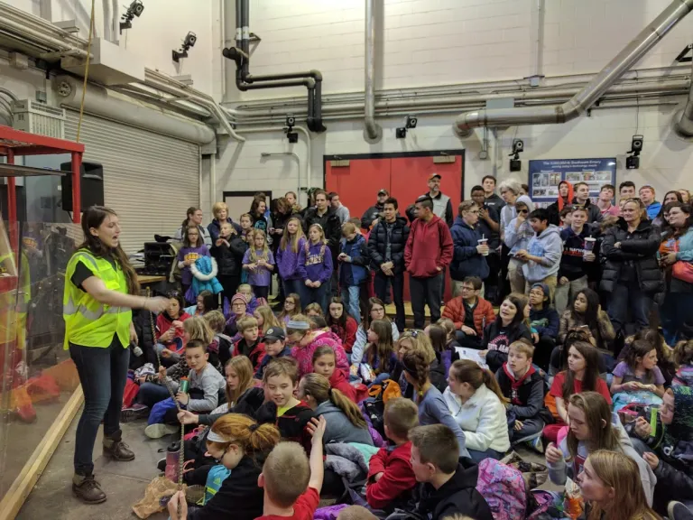

The joy in explaining concepts to others.
I started teaching in High School, tutoring children in Hebrew to help prepare them for their Bar/Bat Mitzvahs. In college, I continued to teach through outreach programs as a part of the Society for Engineering Mechanics (SEM). The main outreach event each year was the Engineering Open House where I had the opportunity to present various scientific topics and experiments to thousands of people. As a part of SEM, I also had the opportunity to get involved in curriculum development for the introductory mechanics courses. More information on these projects can be found on the projects page.
My first experience running a classroom was as an Engineering Learning Assistant (ELA) my senior year. As an ELA, I mentored a class of 19 first year engineering students on how to be successful at the University of Illinois and beyond. I designed my own lectures and tuned the curriculum to my style. As much as I enjoyed tutoring and mentoring undergraduates, my love of education blossomed during my graduate career.
Throughout my Master’s degree, I was a teaching assistant for Theoretical and Applied Mechanics 251 – Introductory Solid Mechanics. My first semester teaching, I focused on running my discussion sections and holding office hours. As I became comfortable with my role, I worked to help improve the course through question development. The course uses a custom online learning system called PrairieLearn. This was developed at the University of Illinois at Urbana-Champaign by Professor Matt West. Students use this system for online homework assignments, computer based quizzes, and their final exam. The benefit of an online system is consistency and the ability to test students frequently. Instead of a couple of major midterms and a final exam, students are tested bi-weekly and given the opportunity to retry the exam in the intermittent weeks. This may seem like an excessive burden to the students, however, it has been shown to improve student learning by increasing student engagement with the material and decreasing the amount of content covered on each evaluation.
Question development involved coding in HTML, Python, and JavaScript. I enjoyed having the opportunity to create new content for the course while gaining more coding experience. As I became more comfortable with the platform, I even contributed a small addition to one of the elements on the site.
I admire PrairieLearn and the effort put into the introductory engineering courses at the University of Illinois. This was developed solely with students in mind and eliminated the need for expensive online tools/homework systems. During this transition, the teaching staff also got rid of the textbook requirements. This helped students, however, they no longer had an outside resource for deeper learning. In one of the courses, Dynamics, this was not an issue as Professor West had developed a set of online reference pages alongside PrairieLearn. Inspired by these pages, I began using course lecture notes to create a set of online notes for Introductory Solid Mechanics. Towards the end of my time at Illinois, I combined my reference pages with the Dynamics book to create the TAM mechanics reference site: http://mechref.engr.illinois.edu/